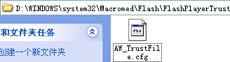
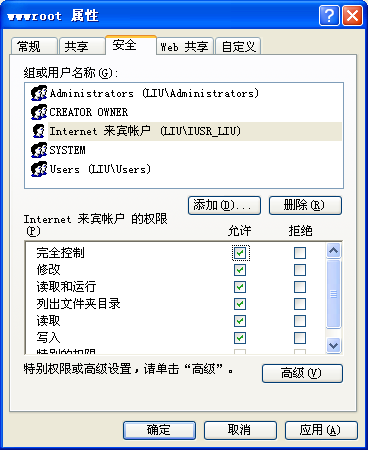
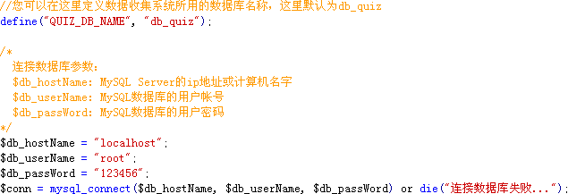
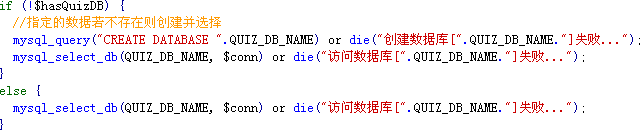

| 常见问题解答 |
||
|
☆ 试题大师试用版与正式版有什么区别？ 秋风试题大师是一款共享软件，软件的开发与升级需要您的支援；试用版最多只能添加15道试题，且不能注册。它会在主窗体标题处加上(试用版)字串 ，播放器设置->作者&水印处的设置功能不能使用，且在发布为网页模式、LMS模式生成的Flash试题时，会在试题上加上"秋风试题大师 试用版"字串，如下图示： 正式版在未注册时，为未注册版；未注册版会在主窗口标题处加上(未注册版)字串，其它与试用版一样。 正式版注册后，不再有任何功能限制，且能够免费升级后续版本，及获到技术支持。 若您需要正式版，请与秋风联系 购买，价格为￥100元每个拷贝，并提供您的注册邮件及公司名称，秋风会将其作为客户资料记录，将正式版及注册码发给您。 ☆ 为什么我做的测试题，不能发送数据、邮件，也不能执行做完题后如关闭、跳转到指定网页等操作？ 此种问题，首先确定您所有的设置都是正确的。在这个前提下，若仍然有问题，则可以确定，是Flash播放器安全性设置问题。当您安装完成试题大师后，它自动打开了本地计算机的Flash安全权限，所以此问题一般出现在您把测试题拷贝到其它电脑上并运行后。 Flash播放器对于本机上运行Flash文件，在Flash播放器版本8以后，有了严格的限制，而对于在网页上的Flash文件则没有，所以有两种方法解决此种问题。 1．把您的测试题发布到网页上，以http://的方式访问，此种方式最好。 2．打开有此问题电脑上的Flash播放器安全限制，其方法如下： 打开操作系统盘的X:\WINDOWS\system32\Macromed\Flash\FlashPlayerTrust目录（Windows 2000系统为X:\WINNT\system32\Macromed\Flash\FlashPlayerTrust，这里的X指您操作系统的安装到的盘符），若是没有此目录，请一级一级建好，然后用记事本等创建一个文本文件取名如AW_TrustFile.cfg，里面写入如下内容： # 秋风试题大师之Flash Player安全信任文件 C:\ D:\ E:\ F:\ 其中第一句是注释，可以不要；其后您的电脑有几个盘符就写到几，完成后结果如下图所示：  然后再打开测试题，看那些功能能否启用；若仍然有问题，请联系秋风软件工作室。 ☆ 为什么我搭建的asp数据收集系统，可以登录，但却接收不到数据？ 这里需要注意的是：samples下面asp或php文件夹中的crossdomain.xml文件，一定要存在，最好放它到网站的根目录下。 这里仍然保证您的设置是正确的，即属性设置->结果设置里，接收网页是可以工作的，asp系统是可以用初始系统管理员admin+123456登录的。若这一切都已设置好，在排除上面一个问题叙述的Flash播放器安全性之外，就是您的Web服务器，iis工作目录设置的问题，请做些如一检查： 1．请检查您搭建的数据收集系统的数据库文件data.asa，其属性不是只读的。 2．若您的iis网站目录设于NTFS格式的盘中，需要开通iis帐号IUSER的所有权限，其方法如下： 首先，打开[我的电脑]，选择[工具]->[文件夹选项...]，点击[查看]页签，去掉里面的[使用简单文件共享 (推荐)]前面的勾选状态。 然后，找到您的iis默认网站目录，如D:\Inetpub\wwwroot，在它上面点击右键，选择[属性(R)]，点击[安全]页签，在里面查看有没有IUSER_XXX用户，没有的话点击[添加(D)...]， 找到IUSER_XXX用户，赋于其所有权限，然后点击[确定]，如下图示：  3．重启iis，再运行测试题，发送数据，问题可解决。 ☆ 为什么我的php数据收集系统不能运行？ php的数据收集系统所有源文件在试题大师安装目录下的samples文件夹下之php文件夹中。 在使用php例子之前，我们假定您有一些php的编码基础，或者有可以用的php资源。以下列一些可能使php系统不能工作的地方。 1．与asp例子不同，它用的是MySQL数据库存储数据，php例子与MySQL数据连接之代码，存在于php文件夹里conn.php文件中， 连接代码如下：  此处假定您用于php例子的数据库名字为db_quiz，而以上代码片段就是与此数据库链接的代码。此处设置，是第一个容易出问题的地方：通常，您若申请了网站空间并且网站提供商有提供MySQL数据库，则其提供的数据库名子一般是固定的，您需要改define("QUIZ_DB_NAME", "db_quiz");这一句中的db_quiz为您的MySQL数据库名子。 之后，就需要保证连接数据库的计算机名、数据库用户名及密码正确，就可以了。 2．接下来的代码，是先判断若您指定的数据库不存在则先创建再选择，存在则选择，代码片段如下：  这里可能出现的问题是：若您设定的数据库不存在则创建，问题和1一样，在于网站空间分配给您的数据库已指定，且与数据连接的帐号没有创建数据的权利，所以问题就出来了。在这里你可以用第1步中的方法，改数据库名字为网站空间分配的数据库名。 3．若上面代码已正常工作，conn.php中接下去会判断数据收集系统所用的表是否存在，不存在则创建并初始化数据。数据收集系统需要用到三个表：quiz、admin及users表。通常，网站数据库所提供的帐号都会有创建数据表的权利，所以此处出问题的可能性不是很大。但若此处也出问题，则用php文件夹下的quiz.sql脚本，用phpMyAdmin等工具，手动生成所需要的数据表。 4．若您所需要的数据库及数据表都已成功创建，建议您修改conn.php文件，移去判断数据库及数据表部分，以提高执行效率。 ☆ 我如何对测试者加入帐号验证功能？ 有两种方法可以对帐号进行验证。 1．在试题大师的[试题属性]之[试题保护]处，若您选择了[密码保护]且用的是[网页验证]，您不勾选[允许测试者改变传入的用户帐号]，则通过验证的用户帐号会传入测试者帐号处，测试者不能再更改传入的帐号。 2．这是试题大师的一个隐含功能，需要一些html基础。 假设您的试题用在一个有用户注册的管理系统中，请更改调用.swf的网页文件加载.swf部分，如何改可用asp及php传值等，如下代码： <param name="movie" value="season.swf?userId=liujw&userMail=awind@awindsoft.net" /> ... <embed src="season.swf?userId=liujw&userMail=awind@awindsoft.net" ... /> 你可以把给过验证的用户帐号及邮件传处.swf?后面，以userId=...&userMail=...来标记，则传入的值，测试者就不能更改了 。 ☆ 我能否对特定帐号的测试者及指定ID的试题，实现只做一次的功能？ 秋风试题大题v1.2.0.6及以上的版本支持些功能，细节请参考结果收集->网络数据库之[结果显示：5.用户管理]部分。 ☆ 我可以为我所设计的测试题加入背景图片及背景声音吗？ 试题大师支持此功能。您可以在试题大师的[播放器设置]的[颜色设置]处设定您所设计测试题的背景图片，[声音 设置]处设置您所设计测试题的背景声音及事件声音。 ☆ 我可以合并多个试题大师工程文件为一个工程文件吗？ 可以。您可以在[文件]->[追加...]处打开要合并的工程文件，它会把试题信息追加到当前的试题工程中。 ☆ 我可以从外部文件导入试题吗？ 秋风试题大师支持从Excel文档导出试题的功能，在[文件]->[从Excel导入...]处打开 您要导出的Excel试题文档，它会把试题信息加入一个主题为Excel文件名的新试题工程中。要导入的Excel文档的格式，请参照试题发布->导出Excel页介绍。 ☆ 我可以为指定的试题设置声音文件吗？ 可以。您只要在参数设置中勾选[试题窗体可以设置试题声音]，则您添加或者编辑试题时，就可以为试题设置声音了。 ☆ 我如何改变我所设计测试题的次序？ 您可以选中您想要改变其排列次序的题，把它拖到您想要它去的地方就可以了。 需要注意的是，若试题设置中您选择的模式为运行时随机出题，则次序先后就没有作用了。 ☆ 我可以在试题大题中使用一些html符号吗？ 是的，试题大师支持一些html符号，您可以在试题的题目、简介、填空及简答题的答案、反馈信息等处使用，比如，您可以用c<a href='www.domain.com' target='_blank'>...</a>来实现一个超链接功能，或者用<u>...</u>实现一个下划线果，其它如<i>...</i>等。 ☆ 秋风试题大师所出的测试题，有数量限制吗？ 因为试题大师生成的测试题为一个Flash文件，所有信息都放入此文件中，又因为Flash本身的一些特性限制，使得秋风试题大 师所出试题在数量上有一些限制：测试发现，若出的题数据超过300题，就有试题不能运行的可能。 若您设计的试题发布为Word文件，则没有题数限制。 ☆ 秋风试题大师生成的测试题，可以用键盘操作吗？ 试题大师发布模式为网页模式、LMS模式时，生成的测试题是一个Flash文件，它支持键盘的一些快捷键操作，具体如下： Page UP、←、↑：上一题；其中←对填空、简答题无效，↑对判断、单选、简答题无效。 Page Down、→、↓：下一题；其中→对填空、简答题无效，↓对判断、单选、简答题无效。 Enter键：单题提交模式下或到最后一题，执行提交操作，反之则跳到下一题，其对简答题无效；在对话框显示的情况下，关闭对话框。 Escape键：在对话框显示的情况下，关闭对话框。 |
||
秋风软件工作室 |
||